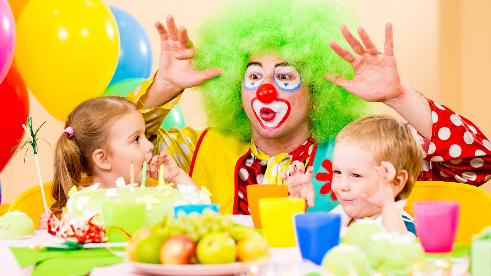
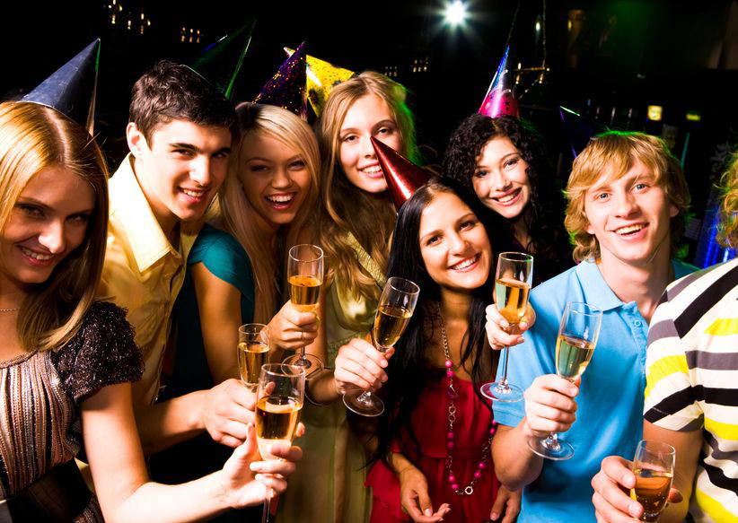
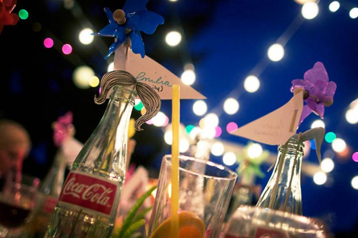
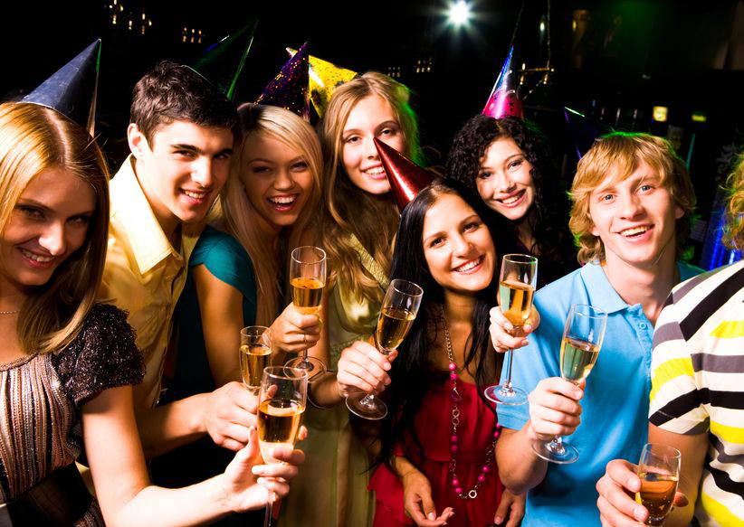
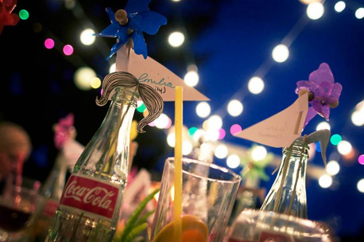

МЕНЮ
Фотоотчеты с проведенных нами мероприятий
День рождения взрослый или детский, неважно чей, должен быть ярких и веселым. Шумные игры, веселые гости, вкусная еда: все это мы поможем Вам организовать для счастливого дня.

 



У нас уже разработано множество программ на самые разные темы и для самых разных возрастов для того, чтобы провести замечательное торжество дома, в кафе или на природе. Но мы готовы создать для вас абсолютно уникальный праздник. У нас работают только опытные аниматоры, в анимационной мастерской имеется огромный выбор костюмов для самых разных образов, ростовые куклы и все необходимое для того, чтобы сделать праздник очень веселым и настоящим.
© Праздничное агентство PLAYDAY
Владивосток, 2017